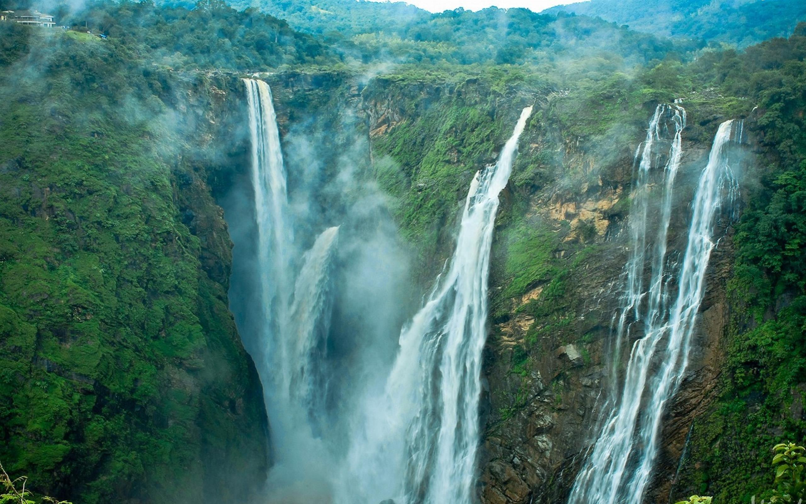
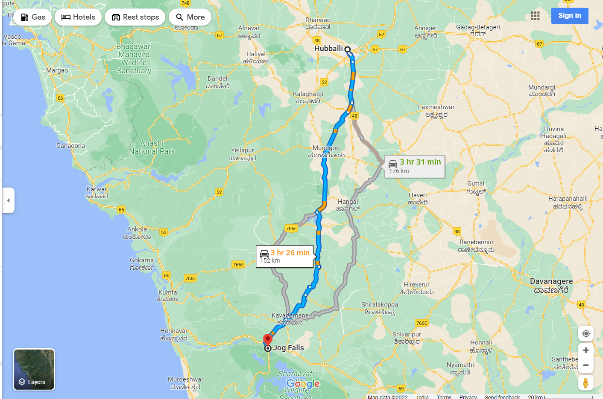

UTTAR KANNADA WATERFALLS
JOG FALLS

Jog Falls is a waterfall on the Sharavati river located in the Western Ghats
of Sagar Taluk of Shivamogga District, Karnataka, India. It is the third
highest plunge waterfall in India. It is a segmented waterfall which depends
on rain and season becomes a plunge waterfall. The falls are major
attractions for tourists and is ranked 36th in the list of free-falling waterfalls,
490th in the world by list of waterfalls by total height, 128th in the list of
single-drop waterfalls in the World by the waterfall database.
Jog Falls is created by the Sharavati dropping 253 m (830 ft), making it the
third-highest waterfall in India after the Nohkalikai Falls with a drop of
335 m (1,099 ft) in Meghalaya[11] and the Dudhsagar Falls with a drop of
310 m (1,020 ft) in Goa.
Sharavathi, a river which rises at Ambutirtha, next to Nonabur, in
the Thirthahalli taluk takes a northwesterly course by Fatte petta, receives
the Haridravati on the right below Pattaguppe and the Yenne Hole on the
left above Barangi. Then, it bends to the west, precipitates itself down the
Jog Falls (aka Gersoppa Falls), and passes the village of Gersoppa (properly
Geru-Sappe), which is some 30 kilometres (19 mi) away, discharging into
the Arabian Sea at Honnavar in Uttara Kannada.
The Sharavathi, flowing over a very rocky bed about 250 yards (230 m)
wide, reaches a tremendous chasm, 290 m (950 ft) deep, and the water
comes down in four distinct falls, Raja, Rani, Roarer and Rocket.[13] The
Raja Fall comes down in one unbroken column sheer to the depth of 250 m
(830 ft). Halfway down, it is encountered by the Roarer, which precipitates
itself into a vast cup and then rushes violently downwards to meet the Raja.
The Rocket shoots downwards in a series of jets. The Rani moves quietly
over the mountainside in a sheet of foam. The Tourism Department has built
steps from the viewpoint at the top, where the waterfall can be seen from
across, to the bottom of the hill. There are approximately 1,400 steps made
to reach the bottom of the hill.
Significance
Associated with the waterfall is the nearby Linganamakki Dam across
the Sharavati River. The power station has been operational since 1948 and
is of 120 MW capacity, one of the largest hydroelectric stations in India at
that time and a small source of electric power for Karnataka now. The power
station was previously named Krishna Rajendra hydro-electric project, after
the King of Mysore at that time. The name was later changed to Mahatma
Gandhi Hydro-electric Project. It was served by The Hirebhaskara dam until
1960. After 1960, due to the ideas of Mokshagundam Visvesvarayya,
Linganmakki Dam has been used for power generation.
Best time to visit jog falls
The months of June till September witness heavy rainfall in the region. The
monsoon season is the best season to visit Jog falls, as the beauty of the place
is enhanced during monsoons. The summer season begins in the month of
March and continues till May
Best places to stay near jog falls
There are plenty of accommodation options near Jog Falls in Shimoga. The
KSTDC Maurya Hotel offers affordable rooms. There is also a dormitory
with ten beds. These options are more pocket-friendly as compared to
private hotels. It is advisable to book the room in advance especially
between August and December since the weather during this time of the year
is pleasant.
Best places to eat near jog falls
There are a few restaurants near Jog Falls. Vegetarian and non-vegetarian
food are available at almost every restaurant. Though the restaurant at
Maurya hotel is decent, carrying your own food and water is a good option.
Hotels near Jog Falls
•Velankanni Homestay Lodge Jog Falls
Near Boating Point, Reserve Camp, opp. Jog Police
Station, Jog 577435, India(1.9 km from Jog Falls).
•Jog Sharadha Homestay
Location : Reserve Camp, Jog 577435, India (0.6 km from Jog
Falls)
•Sharavathi Adventure Camp
Location : Kargal-Jog falls Sagar Taluk, Kargal 577421, India(4.5
km from Jog).
Location

Sagar Taluk of Shivamogga District, Karnataka, India.